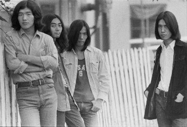
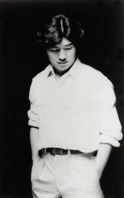
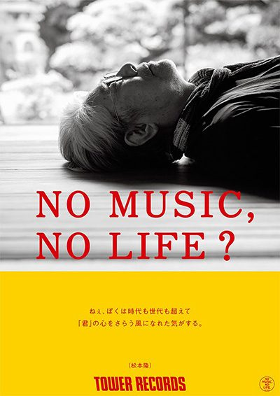
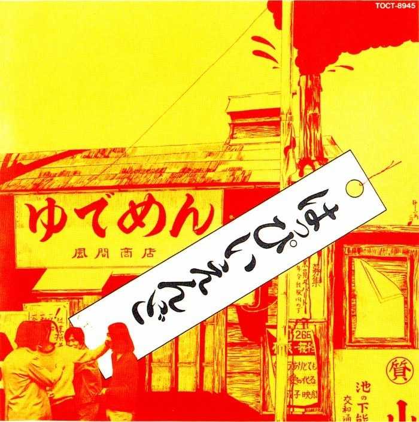
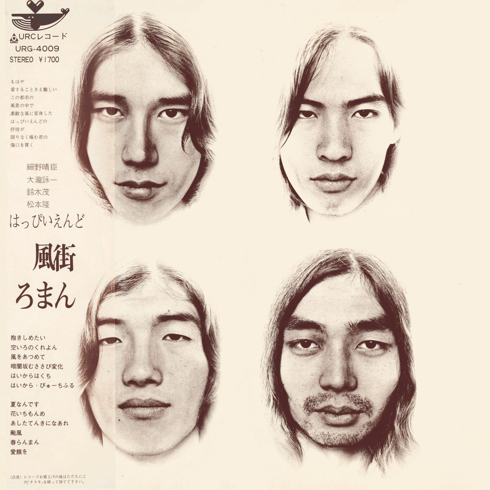
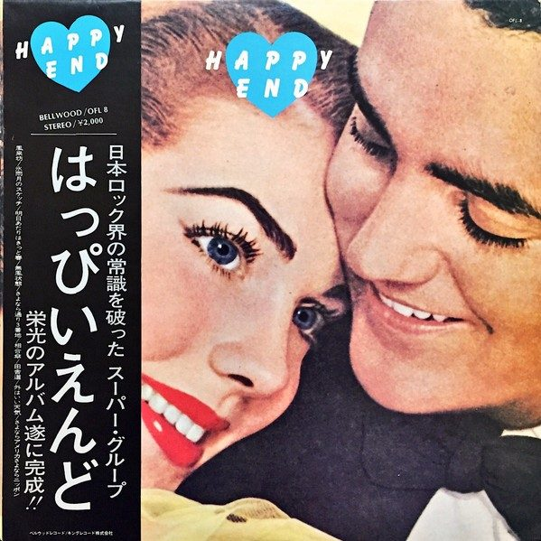

只存在了三年、卖得并不好，却给整个日本流行音乐定下了「日语可以唱摇滚」这条底线。 四位成员后来各自成了日本乐坛的一条支流：一个组了 YMO，一个做了《A LONG VACATION》， 一个成了写下几百首国民歌词的人。

他们不是凭空出现的。はっぴいえんど 的四个人，是从 1960 年代末东京地下摇滚的残骸里捡出来的。
那场争论的双方，其实说得都很实在。内田裕也主张「摇滚是要跟世界沟通的东西，用英语唱不懂也照样能让人起舞」； 大瀧詠一的回答是——「我可不是为了抗议才用日语唱的。要在日本做摇滚，就得想办法让它在日本扎根。」 两句话并排放着，你就会明白 はっぴいえんど 到底在赌什么：不是民族情绪，是「听众是谁」这个很朴素的问题。7
鼓手写词，吉他手和两个唱歌的人作曲——这个奇怪的分工，是他们所有chemistry的来源。
1947 年 7 月 9 日生。乐队的低音与旋律主力，《風をあつめて》的作曲者。解散后组建 Tin Pan Alley，1978 年与坂本龙一、高桥幸宏组成 YMO，把日本电子乐推到世界。图为 2019 年东京国际电影节。

1948 年 7 月 28 日生，2013 年 12 月 30 日因解离性动脉瘤去世，享年 65。人称「福生的仙人」。解散后做出《A LONG VACATION》（1981），一手建立了所谓的「Niagara Sound」。

1949 年 7 月 16 日生于东京。三张专辑几乎所有歌词都出自他手。后来成为日本最重量级的作词人之一，为松田聖子写下大量名曲——松田聖子也是唯一一位同时收到这四人供曲的歌手。1
1951 年 12 月 20 日生。加入时还是高中生，被称「天才吉他手」。《風街ろまん》里的《花いちもんめ》是他的作曲处女作。解散后与細野共组 Tin Pan Alley，1975 年发表个人专辑《Band Wagon》。图为近年演出现场。
图片来源：細野晴臣 2019（东京国际电影节），Wikimedia Commons，CC BY 2.0，摄影 Dick Thomas Johnson； 大瀧詠一，英文维基百科，版权归原权利人； 鈴木茂，来自其官方网站 suzuki-shigeru.jp（©HIRANOX）； 松本隆（2021），日本コロムビア「松本隆 作詞活動50周年」特设站 columbia.jp/matsumototakashi，Tower Records「NO MUSIC, NO LIFE.」广告素材。 均为非商用个人阅读用途的引用。
只有三张录音室专辑。不多不少，正好是一支乐队从立论、到完成、到告别的过程。

宣言式的第一张。封面本身就是一家名为「ゆでめん 風間商店」的面馆，通称由此而来。整张用日语写、用日语唱，在当时几乎等于挑衅。它引发的争论比销量重要得多。

巅峰。日文维基的说法是：这张一发，乐队「实质上就解散了」——因为它已经完成了。2007 年 9 月，《Rolling Stone Japan》把它评为日本摇滚史上最伟大的专辑。2,3 封面插画与设计为 宮谷一彦，封面摄影 野上真宏。3

解散之后才发行。最后一轨《さよならアメリカ さよならニッポン》是 Van Dyke Parks 写的曲子配上日语歌词。有乐评认为，四个人各自的才华在这张里反而摊得最开。4
封面图片版权归各唱片公司／权利人所 有，此处为低分辨率评论性引用，非商业用途。
作词：松本隆｜作曲：細野晴臣｜3 分 50 秒｜收录于《風街ろまん》A 面第 3 首3。 2003 年出现在索菲亚·科波拉的《迷失东京》及原声带中2,8。
4 分 02 秒，与《風をあつめて》等长。
带配乐的版本将上传 YouTube 后在此嵌入。
本页可直接播放的是下方无声版资料短片——请自备音源同步播放。
街のはずれの 背のびした路地を 散歩してたら
汚点だらけのモヤ越しに
起きぬけの路面電車が 海を渡るのが 見えたんです 远离尘嚣的大街，我漫步在这条懒洋洋的小巷里；透过斑斑点点的薄雾，看到路边的有轨电车飞驰而过，好像要跨越大海一样。 それで ぼくも
風をあつめて 風をあつめて
蒼空を 翔けたいんです 蒼空を 于是我也想要，把风都收集起来、把风都收集起来、把风都收集起来，好想在苍穹展翅飞翔，在苍穹翱翔。 歌词为评论性引用，原文依据歌ネット罗马字转写与藤女子大学学术论文所引文本核对；个别字句在不同版本间略有出入。中文译文参考网易云音乐用户译文（译者：飞天侠_），为阅读通顺做了分行与标点调整，非官方译本。歌词著作权归原权利人所有。
三段主歌结构完全一致：先写「在某处消磨时间」，再写「隔着什么东西看见什么」，最后落到同一句「それで ぼくも 風をあつめて」。第一段是路地／路面电车渡海，第二段是波止場／挂着緋色帆的都市停泊，第三段是清晨无人的咖啡店／摩天楼的衣摆擦过、浸湿人行道。三幅画面一个比一个更「都市」，但情绪一次比一次更轻。
モヤ（雾霭）、ガラス（裂了缝的玻璃）、波止場——每一段的视点都不是身处其中，而是从外围、从脏掉的介质后面看过去。松本隆写的是「正在消失的东京」：1964 年奥运会之后被开发吞掉的那座城，他把它放进一个虚构的「風街」里。3 所以「收集风」这个动作才成立——留不住的，只能收集。
有日语学者专门分析过細野的唱法：他不拖长母音，而是把音「ブツリブツリ」切断般地唱出来，是一种干涩的唱法，为了让日语贴合摇滚的节奏而主动变形了发音。7 换句话说，争论的答案不是写出来的，是唱出来的——日语没有迁就摇滚，摇滚也没有迁就日语，是歌手在嗓子里把它们硬拧在了一起。
乐评人北中正和 2017 年在 WHAT's IN? tokyo 撰文，标题即为「はっぴいえんど的名曲《風をあつめて》诞生于录音棚的走廊」。1 该文原文页面已被归档、本次未能取回正文，因此这里只引用标题所载的主张，不作细节展开。
本页所有事实均来自以下公开来源，已逐条核对。未找到可靠来源的内容一律未写入。